Columbia Peak, Northwest Ridge
I was changing jobs at work, and had the opportunity to use a vacation day. As usual, my eyes glazed over with happiness! I looked at the green Beckey Book. hmmm….the Monte Cristo Peaks, but only if the weather is beautiful all over the state (it’s a great place to go if you like bailing due to weather!). I crossed my fingers, really wanting to visit this area which is quite close to home, but usually shrouded in thick mist and cloud. Jeff S. suggested Columbia Peak, which is a mere 2.5 miles from the old mining town. He had climbed it in late August, and gave me a detailed document that described the route. I wanted to ride a bike into the old town (I hate nothing more than walking roads for 8 miles!), but I didn’t have a bike of my own. Kris’s mountain bike would have to do, although I’m thankful that nobody saw me hunched over, knees-to-neck on the undersized model! The front tire chronically leaked, so I bought a small bike pump, resolving to stop every mile and deal with it.
Early Wednesday morning I arrived at Barlow Pass, quickly jumping on the bike and taking off in cold, damp air. Typically, low clouds filled the valley, and I whimpered inwardly, visions of sunny traverses on rocky ledges dissipating. I arrived in town after an hour, leaving the bike in the brush some distance up the trail to Poodle Dog Pass. I spent another hour getting there, clambering over roots and rocks on this very rough trail. A Poodle Dog is a marmot, this was an old miner’s term. I wondered about a life spent toiling for ore in this damp, rocky place.
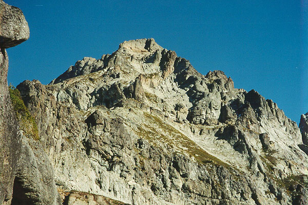
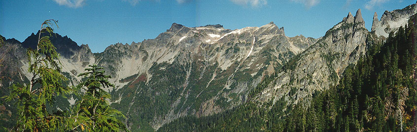
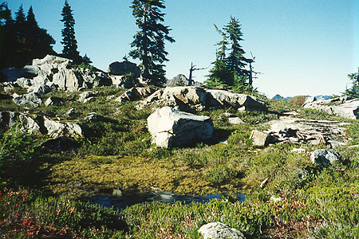
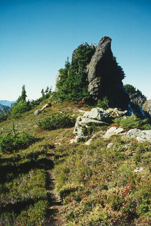
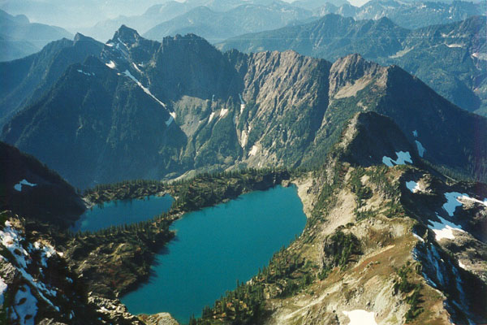
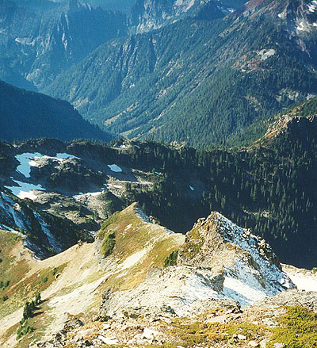
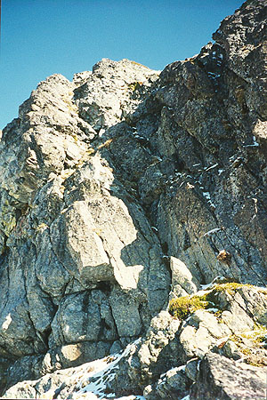
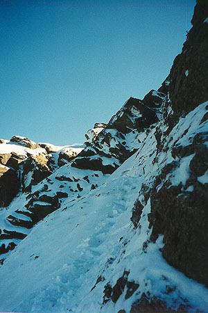
At the pass I continued south on a ridge towards Twin Lakes. This way-trail was much better than the “maintained trail” before. I was getting above the clouds! Silvertip Peak loomed to the west, becoming crisper as I climbed. Eventually, the sun came over the Wilman’s Spires, and my damp clothing began to dry. The trail spent a long time traversing a slope above the Silver Creek drainage. I knew a trail down there would take you to abandoned Silver City and Galena, and finally to the curious town of Index. I steamed ahead, eager to get my first real view of Columbia.
Finally, at a pretty rock and heather garden near Twin Lakes, the mountain was visible and massive, making up the skyline before me and left. The route looked improbably steep, especially the final 1000 feet. Jeff assured me the climb was class 3, and I had brought crampons and ice ax as he advised. I could just barely see one snowfield though. Mostly the mountain was a collection of rocky towers, dirty gullies, scree and ledges. I left my soaking shirt here to dry, and changed into a fresh one.
Leaving the trail, I traversed a basin of rock and snow to meet a long ridge radiating from below the summit. Faint but good trails led up a steep heather slope on the north side, then along a very pleasant traverse of the top and south sides. The Twin Lakes were spectacular, nestled on an arm of the peak, and glistening a turquoise color. I moved onto the south side of the ridge, traversing a scree slope at the base of a cliff. Soon I arrived at a long bench of snow, stretching off northeast to the ‘76 Glacier. My eye followed the glacier around to the opposite end under Wilman’s Peak. This makes an excellent bivy location, if you are so inclined.
Above me, a large black buttress blocked the way. I was supposed to go up a snowfield on it’s left. The snowfield steepens, and you traverse right on ledges at it’s top, then go left up a gully.
I put on crampons for the very hard snow, actually ice. I reveled in the alpine feeling of the climb, the blue sky and the sun. No sound but the crunch of my spikes. At the top, I stepped over a moat, quickly reaching the gully I sought. Jeff described “a rock step,” and this certainly fit the bill. But it was about 30 feet high and icy. I rationalized that he’d come before the snows, and it may have been more pleasant. I climbed up, stemming on good rock in the lower portion. The upper portion didn’t inspire confidence. I made heavy use of the fact that the moss, mud, and rock were frozen into place!
While I brought my hands back to life at the top, I learned I had taken the wrong gully. The proper one faced south, was low angle, and had a nice trail coming up! “Oh. That might have been better,” I said aloud. At least I wouldn’t have to descend the false gully.
Here the route becomes third class, with bits of trail on the left side of the vast central gully which comes down all the way from the summit block. I went forward with anticipation, wondering what obstacle would come next. I wandered too far to the left, looking down cliffs to the ‘76 Glacier. Continuing up, I was soon at the base of the summit block, about 150 feet high at this point. A cairn and ledge led to the left and around a corner. I followed eagerly.
On this side of the mountain, there were heaps of snow piled on ledges, all powdery and unconsolidated. The rock underneath was icy, and kicking steps wasn’t useful in 4 inches of powder. I started walking the snowy ledge, but merely 10 feet before the wide, safe ridge-top I came to an impasse. Normally, this ground would be very exposed but very easy. Today, the fact that all steps were insecure, and I couldn’t find or manufacture hand holds in the wall made it dangerous. Patiently, I scoured the snowy wall like a grid, testing with ice ax, clearing snow from slabs, looking for cracks. Since I couldn’t get any kind of self-belay I reluctantly turned back. Even this was hard! I hated to give up just below the summit. Also, the views over to Kyes Peak and other summits to the west were blocked by a ridge. Had I been able to see over there, I may have been content to turn around, feeling good about a near-panoramic view at least.
But I gave it another try, this time on a ledge closer to the cliff-edge, but with more snow, where I could kick actual steps. In the same area, I ran into a similar problem, but here, the slope above me was dirt, actually frozen mud! The ax provided a solid belay here, but I still had tenuous upward progress on bits of rock, frozen mud and powder. With my feet on welcome rock, I pondered the final moves dubiously. Eventually, I realized I could chop steps in the frozen mud, just like you would do on ice. (“Why didn’t you use crampons?” - I left them above the snowfield below!)
Once on the ridge-top, I admired my handiwork: black holes in a wall of dirty snow. I wondered what someone else would think upon coming this way! Now, only the scramble to the summit remained, and I wouldn’t be easily dissuaded. I climbed a steep but blocky chimney, then a small face. It was fun and warm as long as I avoided the icy north side above my snowy “rubicon.” And on the summit I stood, looking at all my mountains, feeling proud and thankful for the day. I tried to do many things at once: eating, reading the summit register, taking pictures, and with an undercurrent of tension, looking for another way down. If I could avoid the frozen mud, I’d be very happy!
On the opposite side of the summit wedge, I saw that relatively low-angled sunny ledges could take me to a short, icy gully on the south ridge. Climbing that, I could drop down the other side, then traverse northwest there. With luck, this would take me to the top of the central gully, where I could walk to the cairn and snowy ledge where the difficulties began. I had to try it, it would be fun, too.
I down-climbed from the summit, easily traversing under the back side. The gully was easy to climb up, but the descent of the other side was harder. After going down a reasonable way, I attempted to traverse back. Before I knew it, I was looking down the central gully, pleased at having “encircled” the summit block, and avoiding the dicey terrain. I descended, concentrating on hands and feet, trying to follow my route up. Soon, metallic buzzing noises sounded on my left: rocks whizzing down the gully. Now that the sun was out, they were unfreezing, and coming down at regular 3 minute intervals. Happily I was able to stay right, and eventually leave the central gully completely.
I quickly descended the “proper” gully and “rock step” (5 feet of a 5.0 bouldering move, I think). Putting on crampons, I got to practice flat-footed descent on the ice, slamming 10 points in on each step, sending small shards of ice skidding away. Now below the black buttress, I looked back to admire the peak. It had been a challenging and exciting climb. It’s not a walk-up at all. But it’s not hard either. It is 3rd class if you do everything right. It reminded me quite a bit of Mt. Teewinot in the Tetons, on a smaller scale. It doesn’t get climbed very much, but it’s a special climb for me.
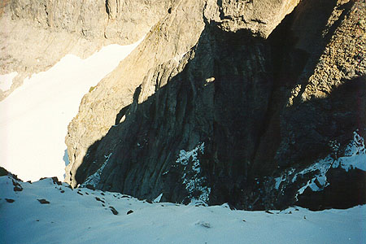
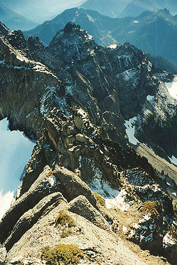
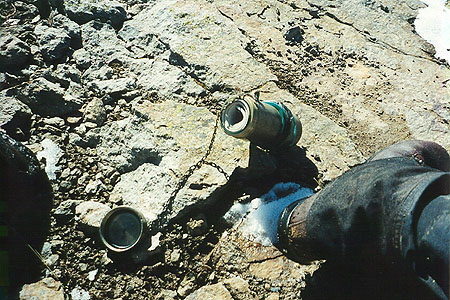
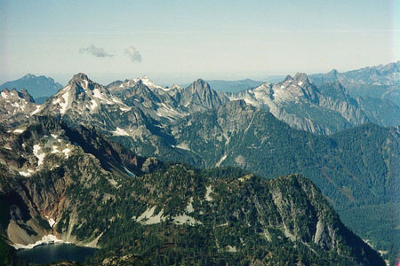

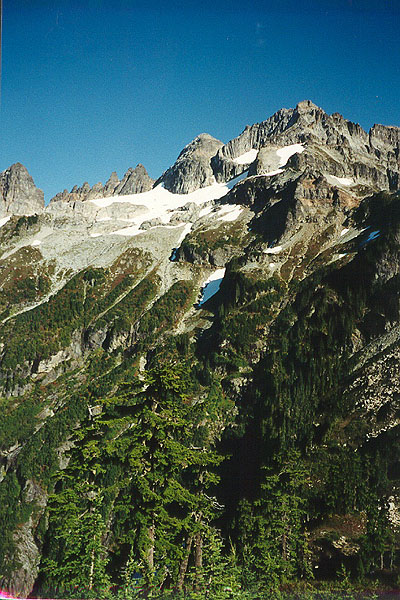
In a boulder and heather garden I napped for 30 minutes. Back on the trail, I found the best huckleberries I’d ever eaten, harvesting by the dozens. I had gotten an exertion headache, but by taking off my shirt, and moving down smoothly it went away. I admired the Sheep Gap mountains to the west, which looked very rugged and exciting. Beckey’s comments about Sheep Gap and the vicinity are tantalizing. He calls the mountain “relatively unknown to climbers,” but it “deserves more attention.” If that isn’t a call to arms, I never heard one…
Singing random songs got me down to the bike, it was a long trip down wet slabs and rooty trail. I forgot to mention that I’d forgotten iodine pills, so I only had one quart of water for the day. I would have brought myself to drink from the many streams along the trail if:
- There had not been active mining in Gothic Basin until the 1960s.
- I hadn’t read somewhere that cyanide was used in mining processes!
- The water had not collected in pools of industrial-looking foam!!
As it was, I did get a quart from a pristine tarn in the heather/rock garden country, and that was enough.
The bike ride back was such fun, mostly downhill, lots of coasting and making furtive glances to peaks like Del Campo and Forgotten. Back at the car, I met a couple who had hiked to Glacier Basin. These were the only people I saw all day and it felt awkward to talk.